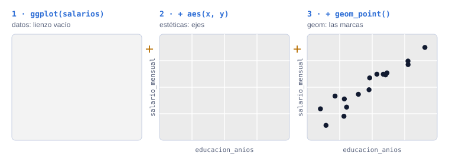
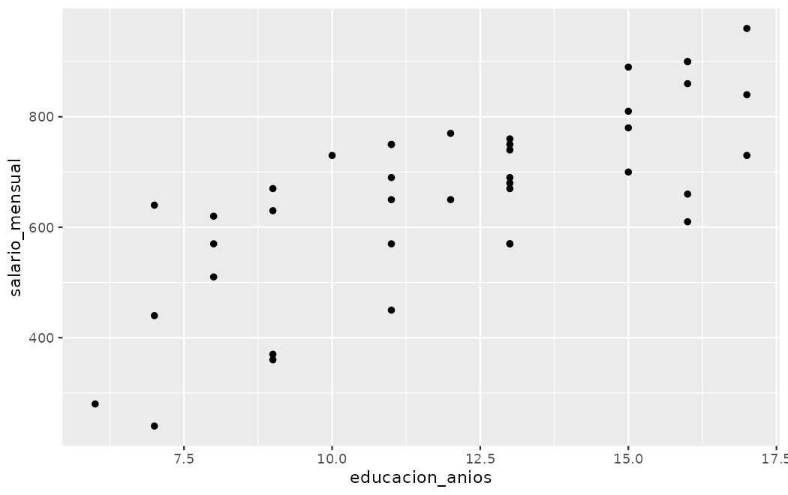
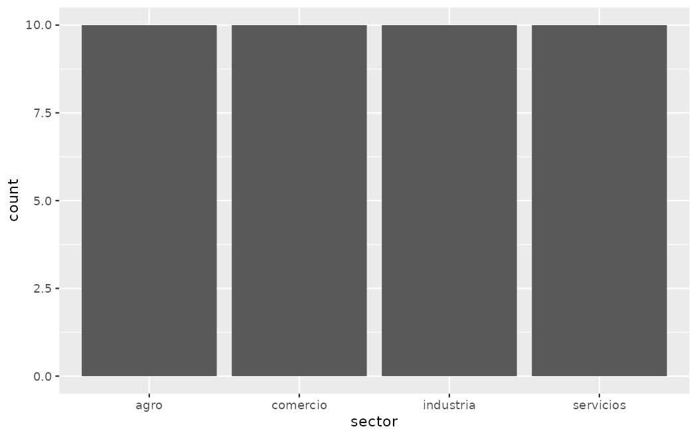
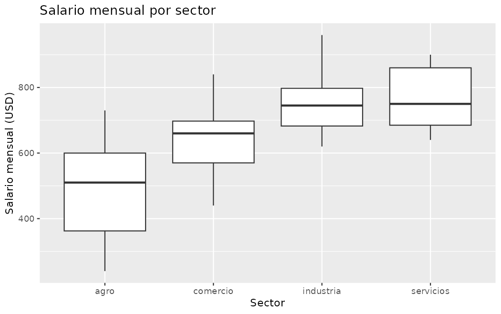
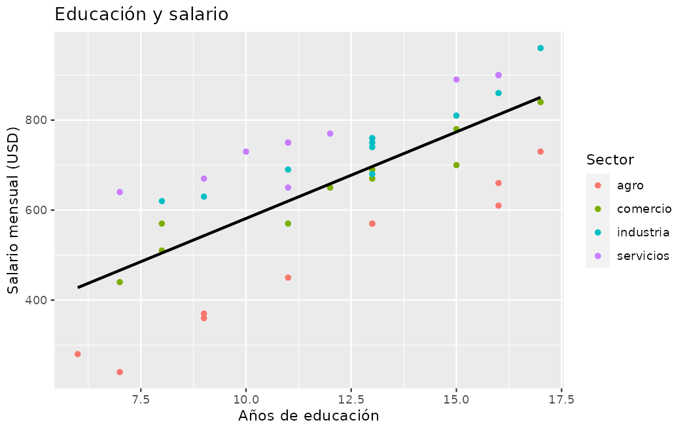
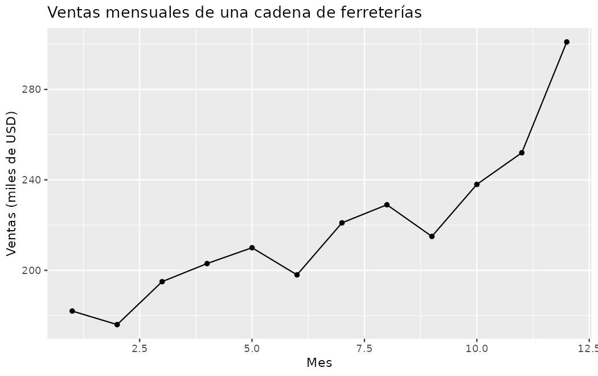
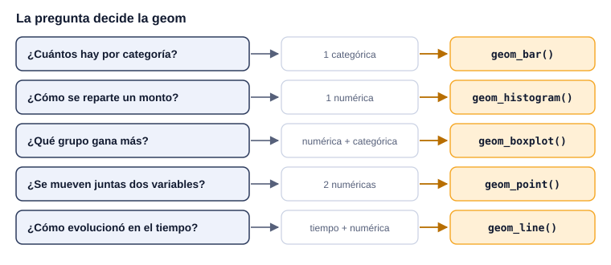

¿Qué puedo descubrir de mis datos antes de calcular?
Un buen gráfico muestra en segundos lo que una tabla esconde: dónde se concentran los salarios, qué grupo está mejor, si dos variables se mueven juntas. Esta semana aprendes la gramática de ggplot2 y, sobre todo, a elegir el gráfico que responde tu pregunta.
importar
→
ordenar
→
transformar
→
visualizar
→
modelar
→
comunicar
Pregunta orientadora¿Qué gráfico responde mi pregunta, y qué puedo afirmar (y qué no) a partir de él?
Lectura
R4DS cap. 1 · Data visualization
Proyecto
Fases 3–4: primeras visualizaciones
Evaluación
Control 01: semanas 1 a 3
Cómo usar esta guía
“El gráfico simple ha traído más información a la mente del analista de datos que cualquier otro dispositivo.”John Tukey, citado en R4DS, capítulo 1
Esta semana llega la primera librería grande del curso, ggplot2, y con ella una idea: mirar los datos antes de calcular. Cada gráfico responde una pregunta distinta; elegir mal el gráfico no produce un error de R, pero sí una respuesta a la pregunta equivocada.
Con RStudio abiertoDescarga salarios.csv y ventas_mensuales.csv a tu carpeta datos/. Aquí los gráficos se dibujan al pulsar Ejecutar (la primera vez se instala ggplot2).
El libro usa penguins, mpg y diamonds, que no tienen relación económica. Esta guía reconstruye la misma progresión con salarios y ventas. Los ejercicios del capítulo que mencionan fct_infreq() (factores, semana 7) son adelanto opcional.
Control de lectura
¿Qué dibuja ggplot(salarios, aes(x = educacion_anios, y = salario_mensual)) sin nada más?
ggplot() + aes() declaran los datos y el sistema de coordenadas; las marcas las pone una geom como geom_point().
¿Qué gráfico responde “¿cuántas personas hay por sector?”
Contar registros de una variable categórica es el trabajo de geom_bar(): la altura es la frecuencia.
¿Qué controla binwidth = 50 en un histograma de salarios?
Cambiar el ancho reagrupa los mismos datos: puede revelar o esconder la forma de la distribución.
¿Qué diferencia hay entre geom_point(aes(color = sector)) y geom_point(color = "blue")?
Dentro de aes() es un mapeo (depende de los datos); fuera, un valor fijo.
¿Qué muestra la línea dentro de la caja de un boxplot?
La caja va del percentil 25 al 75 y la línea central es la mediana; los bigotes llegan a los valores no atípicos más alejados.
Pones aes(color = sector) dentro de ggplot() y agregas geom_smooth(method = "lm"). ¿Qué pasa?
Lo que va en ggplot(aes(...)) es global. Para una sola recta, el color va solo en geom_point(aes(color = sector)).
Un diagrama de dispersión muestra que más años de educación se asocian con salarios más altos. ¿Qué se puede afirmar?
Un gráfico describe una asociación observada. La causalidad requiere otro diseño; y 40 personas no representan al país.
¿Qué geom usas para la evolución de las ventas mes a mes?
La línea une observaciones ordenadas en el tiempo. Unir puntos de un histograma no crea una serie temporal: su eje x es un monto, no un momento.
La gramática de un gráfico
En palabras simples
Un gráfico de ggplot2 se arma como una presentación para la junta directiva: primero eliges la hoja de datos (data), luego decides qué va en cada eje y qué se pinta de color (aes) y por último eliges la forma de mostrarlo: barras, puntos o líneas (la geom). Las capas se suman con +, como diapositivas superpuestas.

Datos + estéticas + geom. Sin geom no hay marcas: ggplot() solo declara el sistema de coordenadas.
Los ejemplos usan salarios.csv: 40 personas de cuatro sectores con su sexo, edad, años de educación y salario mensual (datos simulados). Este bloque la prepara; los demás lo ejecutan antes, solos:
En esta muestra, ¿las personas con más años de educación ganan más?
Exploración
Son dos variables numéricas medidas en cada persona: la herramienta es un diagrama de dispersión, un punto por persona. Primero se arma paso a paso para ver qué aporta cada pieza.
Implementación
ggplot(data = salarios) # 1. lienzo vacío
ggplot(data = salarios,
mapping = aes(x = educacion_anios, y = salario_mensual)) # 2. ejes, sin marcas
ggplot(data = salarios,
mapping = aes(x = educacion_anios, y = salario_mensual)) +
geom_point() # 3. un punto por persona
Resultado

Resultado del paso 3, generado con R.
Interpretación
Los puntos suben de izquierda a derecha: en esta muestra, más años de educación se asocian con salarios más altos. Hay dispersión: con la misma educación, los salarios varían bastante (el sector también influye, como verás en el boxplot).
Verificación: ¿cómo sé que es correcto?
El gráfico debe tener 40 puntos, uno por fila (algunos pueden superponerse).
Los ejes deben cubrir el rango de summary(): educación de 6 a 18 años, salario de 240 a 960.
La palabra es asociación: el gráfico no demuestra que estudiar cause el salario.
Una variable a la vez: categórica o numérica
En palabras simples
Para una variable categórica (el sector) se cuenta cuántos hay en cada grupo, como las cajas de un archivo con una etiqueta cada una. Para una numérica (el salario) se agrupan los montos en tramos, como los tramos de una tabla de impuestos, y se cuenta cuántas personas caen en cada tramo.
Una variable categórica toma uno de un conjunto pequeño de valores; una numérica admite un rango amplio donde sumar y promediar tiene sentido. Cada tipo pide una geom distinta:
ggplot(salarios, aes(x = sector)) +
geom_bar()

Diez personas por sector. Mismo número de registros no es mismo salario ni mismo desempeño: solo dice cuántos datos hay.
La altura de cada barra es cuántas personas caen en ese tramo de 100 dólares, nunca una suma de dinero.
Qué controla binwidth
Fija el ancho de cada intervalo en unidades del eje x. Cambiarlo (de 100 a 25, o a 300) altera cuántas observaciones caen en cada barra y la lectura de la forma, aunque los datos no cambien. Muy angosto genera ruido; muy ancho oculta la forma. Pruébalo: pulsa Editar en el bloque de arriba y cambia el 100.
geom_freqpoly() muestra la misma información como línea. Su eje x sigue siendo un monto, no el tiempo: unir los puntos no la convierte en una serie temporal.
Comparar grupos: el boxplot
En palabras simples
Un boxplot es el resumen de planilla por departamento en una sola figura: dónde está el salario del medio (la línea), entre qué valores gana la mitad central del personal (la caja) y hasta dónde llegan los extremos (los bigotes).
Caso: ¿qué sector paga mejor?
Pregunta
¿Cómo se comparan los salarios entre los cuatro sectores de la muestra?
Exploración
Una variable numérica (salario) y una categórica (sector): un boxplot por sector permite comparar la mediana y la dispersión a la vez.
Implementación
ggplot(salarios, aes(x = sector, y = salario_mensual)) +
geom_boxplot() +
labs(title = "Salario mensual por sector",
x = "Sector", y = "Salario mensual (USD)")
Resultado

Resultado generado con R.
Interpretación
El agro tiene la mediana más baja; industria y servicios, las más altas y parecidas entre sí. Las cajas se traslapan: dentro de cada sector hay personas que ganan más que la mediana de otro.
Verificación: ¿cómo sé que es correcto?
Comprueba una caja con números: el promedio de un sector se calcula con indexación (la mediana del gráfico y el promedio no son iguales, pero deben estar cerca si no hay extremos):
Con 10 personas por sector, las cajas son estimaciones frágiles: es una limitación que se dice, no un error del código.
Relaciones y estéticas: color, capas y facetas
En palabras simples
El color es la leyenda de colores del informe: si lo pones en el encabezado (ggplot()), se aplica a todas las páginas; si lo pones en una sola diapositiva (una geom), solo afecta a esa. Las facetas son un gráfico por sucursal, lado a lado y con la misma escala.
Colocar aes(color = sector) dentro de ggplot() lo convierte en un mapeo global: se hereda a todas las capas, incluida una recta de tendencia, y produce una recta por cada sector. Si quieres puntos coloreados por sector pero una sola recta general, el color va solo en geom_point():
ggplot(salarios, aes(x = educacion_anios, y = salario_mensual)) +
geom_point(aes(color = sector)) +
geom_smooth(method = "lm", se = FALSE, color = "black") +
labs(title = "Educación y salario", x = "Años de educación",
y = "Salario mensual (USD)", color = "Sector")

Color local en los puntos y una recta global. Fuera de aes(), color = "black" es un valor fijo, no un mapeo.
Cuando la tercera variable es categórica, las facetas suelen comunicar mejor que acumular color, forma y tamaño en un mismo gráfico:
Un subgráfico por sector, con la misma escala para poder comparar.
Evolución en el tiempo: geom_line()
En palabras simples
Una línea de tiempo es el electrocardiograma del negocio: cada punto es un mes y la línea muestra si el pulso sube, baja o tiene temporadas. Solo tiene sentido unir los puntos cuando el eje x es tiempo.
library(readr)
library(ggplot2)
ventas <- read_csv("datos/ventas_mensuales.csv", show_col_types = FALSE)
ggplot(ventas, aes(x = mes, y = ventas_miles)) +
geom_line() +
geom_point() +
labs(title = "Ventas mensuales de una cadena de ferreterías",
x = "Mes", y = "Ventas (miles de USD)")

Tendencia creciente con un pico en diciembre: temporada navideña. Doce meses no bastan para separar tendencia de temporada.
Elegir el gráfico según la pregunta
En palabras simples
Elegir un gráfico es como elegir el indicador del tablero de control: primero la pregunta del gerente, después la forma. “¿Cuántos?” pide barras; “¿cómo se reparte?”, histograma; “¿qué grupo está mejor?”, boxplot; “¿se mueven juntas?”, dispersión; “¿cómo evolucionó?”, línea.

El tipo de las variables y la pregunta deciden la geom. Un gráfico equivocado no da error: da la respuesta a otra pregunta.
Pregunta
Variables
Geom
¿Cuántas observaciones hay por categoría?
1 categórica
geom_bar()
¿Cómo se distribuye un monto?
1 numérica
geom_histogram(), geom_freqpoly()
¿Cómo cambia un monto entre grupos?
1 numérica + 1 categórica
geom_boxplot()
¿Se relacionan dos montos?
2 numéricas
geom_point() (+ geom_smooth())
¿Cómo evolucionó en el tiempo?
tiempo + numérica
geom_line()
Lo que un gráfico no dice
Una relación positiva entre visitantes e ingreso no mide la conversión (compras entre visitantes): para eso hacen falta las dos variables y una división explícita. Un patrón visual sugiere dónde investigar; nunca sustituye la verificación con los números detrás del gráfico.
Traza · ¿Qué gráfico y con qué estéticas?
Para cada pregunta sobre salarios, escribe la geom (por ejemplo geom_bar) y la variable del eje x. Usa los nombres de columna exactos.
Pregunta
Geom
Eje x
¿Cuántas mujeres y cuántos hombres hay en la muestra?
¿Cómo se distribuye la edad de las personas?
¿Ganan distinto mujeres y hombres?
¿Las personas mayores ganan más?
¿Por qué en la pregunta 3 el eje x es sexo y no salario_mensual?
En un boxplot el grupo va en x y el monto en y: así cada caja es un grupo. Pon aes(x = sexo, y = salario_mensual). Si pusieras el salario en x sin grupos, obtendrías una sola caja horizontal que no compara nada.
Ejercicios
Sin IAIA permitidaIA requerida
E1 · ¿Por qué no se ve nada?
gramática · ★Sin IA
Un compañero ejecuta esto y dice que “ggplot no funciona”, porque solo ve un rectángulo gris con ejes. Explica qué falta y por qué.
ggplot(salarios, aes(x = edad, y = salario_mensual))
Respuesta
Falta una geom. ggplot() con aes() define los datos y qué variable va en cada eje, pero no dibuja marcas: eso lo hace geom_point(). Se corrige sumando + geom_point(). No es un error de R: es un gráfico incompleto.
E2 · Los puntos rosados
estéticas · ★★Sin IA
Se quería pintar todos los puntos de azul, pero salen rosados y con una leyenda que dice “blue”. Ejecuta el bloque, explica qué pasó y corrígelo.
ggplot(salarios, aes(x = educacion_anios, y = salario_mensual, color = "blue")) +
geom_point()
Respuesta
Dentro de aes(), color = "blue" se interpreta como un mapeo a una “variable” constante con el valor “blue”: ggplot le asigna el primer color de su paleta (rosado) y crea una leyenda. Un color fijo va fuera de aes():
Construye un gráfico que compare el salario de mujeres y hombres, con título y etiquetas en español. Escribe una interpretación de dos líneas y una limitación.
Solución de referencia
ggplot(salarios, aes(x = sexo, y = salario_mensual)) +
geom_boxplot() +
labs(title = "Salario mensual por sexo",
x = "Sexo", y = "Salario mensual (USD)")
Criterios: boxplot con el grupo en x; títulos legibles; la interpretación compara medianas y dispersión; la limitación reconoce que son 20 personas por grupo y que el sector y la educación pueden explicar parte de la diferencia (en estos datos simulados, el sexo se asignó alternando filas, así que cualquier diferencia es casual).
E4 · Modifica: el ancho de los intervalos
histograma · ★★IA permitida
Ejecuta el histograma con binwidth = 20, 100 y 300 (pulsa Editar en el bloque de la sección Una variable a la vez). ¿Cuál elegirías para un informe y por qué?
Criterios
Con 20, casi cada barra tiene 0, 1 o 2 personas: ruido que parece patrón.
Con 300, todo cae en 3 o 4 barras: se pierde la forma.
Un ancho intermedio (75 a 100) muestra dónde se concentran los salarios. No hay fórmula única: se prueba y se justifica con la pregunta.
Con la base de tu proyecto, haz tres gráficos, cada uno ligado a una pregunta secundaria: una distribución, una comparación entre grupos y una relación. Para cada uno escribe la pregunta, por qué elegiste esa geom y qué observas.
Criterios (rúbrica de visualizaciones del proyecto)
Cada gráfico responde una pregunta; se prefieren pocos gráficos con propósito a muchos sin él.
Variables apropiadas, títulos y etiquetas comprensibles, geom adecuada.
Cada gráfico está interpretado, no solo mostrado.
Práctica intensiva
Ejercicios rápidos · ¿Qué geom uso?
Escribe solo el nombre de la geom (por ejemplo geom_bar).
Situación
Tu respuesta
Cuántas empresas hay en cada departamento
Cómo se reparte el precio del alquiler en una ciudad
La inflación mensual de los últimos 24 meses
Si el gasto en publicidad se asocia con las ventas
El ingreso de los hogares urbanos contra los rurales
Una recta de tendencia sobre una dispersión
Problemas tipo examen
P1 · Leer una distribución
histograma e interpretación · ★★★Sin IA
Haz el histograma del salario con binwidth = 100 y, con summary(), responde: ¿entre qué valores gana la mitad central de las personas?, ¿el salario promedio está por encima o por debajo de la mediana?, ¿qué sugiere eso sobre la forma de la distribución?
Tu respuesta debe cumplir estos casos de prueba:
Resultado
Esperado
Mitad central (1.er a 3.er cuartil)
570 a 752.5
Mediana / media
675 / 660.2
Forma
media menor que mediana: una cola hacia los salarios bajos
Pista
summary(salarios$salario_mensual) da los cuartiles. Unos pocos salarios muy bajos jalan la media hacia abajo.
Solución
summary(salarios$salario_mensual)
Min. 1st Qu. Median Mean 3rd Qu. Max.
240.0 570.0 675.0 660.2 752.5 960.0
La mitad central gana entre $570 y $752.5. La media ($660.2) es un poco menor que la mediana ($675): unos pocos salarios bajos (los del agro, desde $240) forman una cola a la izquierda. En el histograma se ven como barras bajas a la izquierda.
Verificación: el mínimo y el máximo del resumen deben coincidir con los bordes del histograma.
P2 · Una recta o cuatro
mapeo global y local · ★★★Sin IA
Escribe dos versiones del gráfico educación–salario: (a) puntos coloreados por sector con una sola recta negra y (b) puntos y una recta por sector. Explica qué cambia en el código.
Tu código debe cumplir estos casos de prueba:
Versión
Número de rectas
Dónde va color = sector
(a)
1
solo en geom_point(aes(...))
(b)
4
en ggplot(aes(...)), global
Pista
Todo lo que va en ggplot(aes(...)) lo heredan todas las capas; lo que va en una geom, solo esa geom.
ggplot(salarios, aes(x = educacion_anios, y = salario_mensual, color = sector)) +
geom_point() +
geom_smooth(method = "lm", se = FALSE)
Interpretación: en (b) las cuatro rectas son casi paralelas y la del agro está más abajo: la educación se asocia con más salario en todos los sectores, pero el nivel depende del sector.
P3 · Auditar una conclusión
interpretación · ★★★Sin IA
Un informe dice: “El gráfico de barras muestra 10 personas por sector, así que los cuatro sectores pagan igual; y como la dispersión educación–salario sube, estudiar un año más aumenta el salario en $36.” Señala los dos errores y reescribe las conclusiones de forma defendible.
Tu respuesta debe cubrir:
Afirmación
Lo que debes poder decir
“pagan igual”
Las barras cuentan registros, no miden salarios
“estudiar aumenta $36”
Es una asociación en 40 personas, no un efecto causal
Solución
Error 1: un geom_bar() con 10 por sector solo dice cuántos datos hay por grupo. Para comparar salarios se necesita el boxplot (o promedios por sector), que muestra diferencias claras: el agro está muy por debajo.
Error 2: la dispersión muestra una asociación positiva, no un mecanismo causal: el sector, la edad o la experiencia pueden explicar parte de la relación, y la muestra es de 40 personas.
Reescritura: “En esta muestra de 40 personas, el agro tiene el salario mediano más bajo (≈ $510) y la industria y los servicios los más altos (≈ $750). Las personas con más años de educación tienden a ganar más; esto es una asociación y no permite afirmar cuánto aumenta el salario por cada año de estudio.”
Proyecto grupal · Fases 3 y 4
Primeras visualizaciones exploratorias. El programa no pide un número de gráficos: pide que cada uno responda una pregunta, use variables apropiadas, sea legible, tenga títulos y etiquetas, use la representación adecuada y esté interpretado.
Entregables de esta fase
Preguntas de defensa
¿Por qué utilizaron este tipo de gráfico?
Nombra el tipo de variables (categórica o numérica, una o dos) y la pregunta. “Usamos un boxplot porque comparamos un monto entre grupos” es una respuesta completa; “porque se veía bonito”, no.
¿Qué representa la altura de esta barra?
En geom_bar() y en un histograma, cuántas observaciones hay en esa categoría o intervalo; nunca una suma de dinero, a menos que se haya construido así explícitamente.
¿Qué ocurriría si movemos color dentro de ggplot(aes(...))?
El mapeo se volvería global y lo heredarían todas las capas: por ejemplo, geom_smooth() dibujaría una recta por grupo en lugar de una sola.
¿El gráfico demuestra que una variable causa la otra?
No. Muestra una asociación en estos datos. El proyecto no exige demostrar causalidad, pero sí reconocer esa diferencia al interpretar.
Rumbo al Control 01
Esta es la última semana del temario del Control 01. Repásalo con la guía de lectura y el repaso con simulacro, que tiene ejercicios de gráficos con R en vivo. Sin IA.
Cheat Sheet · Semana 3
ggplot()
aes()
geom
mapeo global
mapeo local
binwidth
faceta
variable categórica
variable numérica
asociación
La plantilla
ggplot(datos, aes(x = var1, y = var2)) +
geom_algo() +
labs(title = "…", x = "…", y = "…")
Geoms de la semana
geom_bar()
conteo por categoría
geom_histogram(binwidth =)
distribución de un monto
geom_freqpoly(binwidth =)
distribución, como línea
geom_boxplot()
monto por grupo
geom_point()
dos variables numéricas
geom_smooth(method = "lm", se = FALSE)
recta de tendencia
geom_line()
evolución en el tiempo
Estéticas y extras
aes(color = var)
color según los datos, con leyenda
geom_point(color = "black")
color fijo
aes(fill = var)
relleno de barras y cajas
facet_wrap(~var)
un panel por categoría
labs()
títulos y etiquetas
Fuentes
[R4DS] Wickham, H., Çetinkaya-Rundel, M. y Grolemund, G. (2023). R for Data Science, 2.ª ed. Cap. 1 “Data visualization”. r4ds.hadley.nz.
Programa oficial del curso (ESEN, 2026): semana 3, “Visualizar antes de modelar”.
salarios.csv y ventas_mensuales.csv son datos simulados para esta guía.